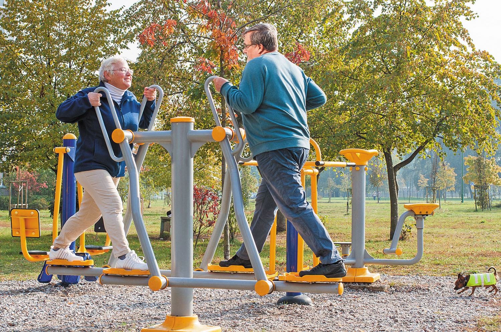

Introduction
-
Here at 400 we only offer the best products to ensure maximum satisfaction,
we provide products funded by the government to be installed in public areas.
Our goal at 400, is to ensure our communities are participating in regular
exercsies to guarantee great health outcomes.